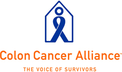

Cancer Survivorship: Pathways to Health After Treatment:
Survivor-Researcher Mentor Program
Understudied Populations
“2015 Success....Inclusion Required” a personal reflection by Jeffrey Brown
Board President, Colon Cancer Alliance
www.ccalliance.org
Today, there are currently 9.8 million cancer survivors in the United States. This number has risen dramatically since 1971 and is expected to rise even more drastically over the next decade as the vast numbers of baby boomers age and advances in diagnostic and treatment capabilities are allowing people diagnosed with cancer the opportunity to become survivors.
The views and opinions expressed do not necessarily state or reflect those of the United States Government and they may not be used for advertising or product endorsement purposes.
Dr. Andrew von Eschenbach, director of the National Cancer Institute, stated in his keynote address at the Cancer Survivorship Conference, that the goal of NCI is that by 2015 there should be no death and suffering as a result of a diagnosis of cancer.A lofty goal, a goal which I pray is realistic. Tremendous effort is required to utilize fully current technologies, medical capabilities and recent research advancements. Perhaps the greatest necessity is to eliminate societal barriers which prevent significant populations of American citizens from benefiting fully from the healthcare advances.
To be a cancer survivor you need two things: First, you must be living. Second, you must have a cancer diagnosis as part of your medical history. To achieve the goal of the NCI, all American citizens currently underserved medically and those understudied in survivorship research must be targeted for full inclusion.
Colon cancer, if identified and caught early, is curable. A 2003 American Cancer Society study found that socioeconomic factors such as low educational attainment, lack of health insurance, or lack of access to a source of health care were associated with under-utilization of colorectal cancer screening1. In 2000, only 39 percent of citizens age 50 or over utilized a recommended screening method 2.
The research presented at the Cancer Survivor Conference discussed an additional barrier of “lack of awareness” in utilizing the existing medical resources. Participant researchers from Apsaalooke Reservation in Montana described the elements required to enhance awareness and increase utilization of healthcare, truly making a difference in their community. Specifically, they described the importance of identifying the “messenger,” respected community champions who conveyed the message, involving all aspects of community life for venues and the means to educate and have the resources to screen, diagnose, treat, and support within the community.
I am in a unique position and have opportunities to use what I have learned from the conference. First, as the president of the Colon Cancer Alliance, our organization will continue to be the voice of the colon cancer survivor, advancing the importance of awareness and need for routine and regular screening. This message will be delivered in communities throughout the country as part of our grassroots “voices” program.
As a member of the Michigan Cancer Consortium and Colorectal Cancer Advisory Committee, I will work on the state level to reaffirm screening expectations, increase citizen awareness, and address inequities in access to medical care.
As the deputy executive director of Oakland County Community Mental Health Authority in Pontiac, Michigan, I am aware of another genuinely under studied and underserved population—the citizens who are developmentally disabled and those recovering from chronic mental illness. In FY 05 our organizational plan will be to advance the health care status of those we serve through increased coordination of care, regular health examinations, and adherence to early detection and screening guidelines.
As a colon cancer survivor, I will continue to speak and be a health messenger to my family, my friends and my community. The message is two-fold. First, pay attention to your body, get regular health care, and adhere to early detection of cancer screening guidelines. Second, if you become a cancer survivor, death is not inevitable. Life—a happy and good life—is possible to attain.
Footnotes
1. Cokkinides VE, Chao A, Smith RA, Vernon SW, Thun MJ. Correlates of underutilization of colorectal cancer screening among US adults, age 50 years and older. Prev Med 2003;36:85-96.
2. Swan J, Breen N, Coates RJ, Rimmer BK, Lee NC, Progress in cancer screening practices in the United States. Results from the 2000 National Health Interview Survey. Cancer 2003; 97:1528-1540.